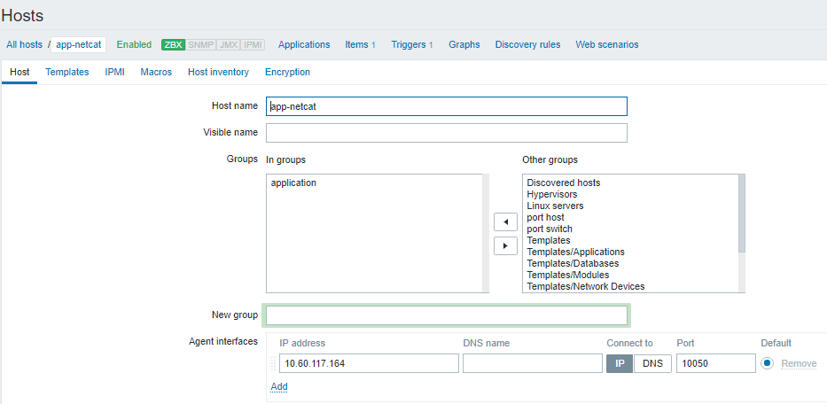

Nội dung kịch bản¶
Đầu vào monitor:
- Memory của VM (qua aodh hoặc zabbix, tick)
- Application(s) của VM (theo appname)
Kịch bản: xuất hiện các alarm
-
Alarm 1: Memory của VM cao: Nếu % Mem của VM > 90%, hoặc % CPU của VM cao > 95% trong vòng 5 phút
-
Alarm 2: Application(s) die:
Nếu app không chạy
Hoặc application ID bị đổi (do có 1 tiến trình trên VM monitor application, nếu application bị tắt thì tiến trình monitor sẽ bật lại => bị đổi PID)
Yêu cầu:
-
Collect được alarm khi xảy ra (zabbix hoặc telemetry) đẩy cho vitrage
-
Vitrage nhân định Alarm 1 => Alarm 2
-
Vitrage gọi đến mitral thực hiện auto scaling (optional)
Thực hiện¶
Chuẩn bị monitor các thành phần:¶
Ở đây cần monitor instance memory và instance application. Lựa chọn zabbix lấy alarm.
- Đầu tiên cần cài đặt zabbix agent cho mỗi instance. Các agent này cần gửi thông tin thu thập cho một zabbix server cài trên 1 host, mà host đó vitrage có thể kết nối được
- Trên UI của zabbix server, ta cấu hình để monitor memory và application như sau:
- (*) Monitor instance memory:
- Ứng với mỗi instance tạo 1 zabbix host tương ứng
- Hostname: tên instance.
- Agent interface: interface của instance, kết nối zabbix server và agent
- Tạo item để thu thập thông tin memory của instance
- Vào tab Configuration > host > [instance09] > item > create item
- Key: vm.memory.size(pushed)
(Key này mang ý nghĩa: % (active + wired) / total memory)
Tham khảo tại: https://www.zabbix.com/documentation/3.2/manual/appendix/items/vm.memory.size_params 
- Tạo trigger cảnh báo : khi mem dùng của instance vượt quá 90% thì bắn alarm
- Vào tab: Configuration > host > [instance09] > Triggers > create trigger

- Ở đây avg(50s) tức nó sẽ xem xét giá trị trung bình trong khoảng 50s. Nếu cần trong 5 phút giá trị này cần đặt 1500
- (*)Monitor instance application:
- Ta nhận biết application chết bằng cách kiểm tra có sự thay đổi pid không.
- Tạo host: ứng với mỗi application tạo 1 zabbix host:
Giả sử app ta muốn monitor là netcat
 -
Lấy thông tin pid: thêm user parameter:
Tạo file/etc/zabbix/zabbix_agentd.d/userparameter_application.conf
UserParameter=application.pid[*],if [ “$(pidof $1)” = “” ]; then echo “-1”; else echo $(pidof $1); fi;
- Vào tab Configuration > host > [instance09] > item > create item
với key: appication.pid.[*] thay * bằng tên process muốn monitor
- Tạo trigger cảnh báo : khi app không chạy hoặc application pid bị đổi thì bắn alarm
- application.pid [*] = -1
- OR application.pid [].max(7d) <> application.pid [].min(7d)
- Vào tab Configuration > host > [instance09] > item > create item
Cấu hình vitrage¶
- Map các alarm vào đồ thị:
- Thêm entity app vào đồ thị, vd ta muốn thêm monitor vào 1 app “netcat”
- Tạo file /etc/vitrage/static_datasources/app-netcat.yaml nội dung:
app-netcat.yaml
---
metadata:
name: list of application run on instance
description: list of application run on instance
definitions:
entities:
- static_id: app-netcat
type: application
id: app-netcat
state: available
- static_id: instance9
type: nova.instance
id: eff1daed-0d97-4975-abbd-3d3e907aeedf
relationships:
- source: instance9
target: app-netcat
relationship_type: run
- mapping cho alarm của zabbix vào đồ thị:
Thêm vào file /etc/vitrage/zabbix_conf.yaml
zabbix_conf.yaml
---
- zabbix_host: instance09
type: nova.instance
name: eff1daed-0d97-4975-abbd-3d3e907aeedf
- zabbix_host: app-netcat
type: application
name: app-netcat
- Vậy ta đã chuẩn bị xong mô hình input, kết quả:

- Cấu hình root-cause-analys:
- Thêm template
Tạo file template /etc/vitrage/templates/usecase-1.yaml
usecase-1.yaml
---
metadata:
name: rca application died caused by high mem on instance
description: rca application died caused by high mem on instance
definitions:
entities:
- entity:
template_id: alarm_high_memory_used
category: ALARM
name: instance high memory usage
- entity:
template_id: alarm_application_died
category: ALARM
name: application died
- entity:
template_id: instance
category: RESOURCE
type: nova.instance
- entity:
template_id: application
category: RESOURCE
type: application
relationships:
- relationship:
template_id : alarm_high_memory_on_instance
source: alarm_high_memory_used
target: instance
relationship_type: on
- relationship:
template_id : alarm_application_died_on_applicaion
source: alarm_application_died
target: application
relationship_type: on
- relationship:
template_id : instance_run_application
source: instance
target: application
relationship_type: run
scenarios:
- scenario:
condition: alarm_high_memory_on_instance and alarm_application_died_on_applicaion and instance_run_application
actions:
- action:
action_type : add_causal_relationship
action_target:
source: alarm_high_memory_used
target: alarm_application_died
- Chạy lệnh:
$ vitrage template validate --type standard --path /etc/vitrage/templates/usecase1.yaml
$ vitrage template add --type standard --path /etc/vitrage/templates/usecase1.yaml
Kết quả¶
vitrage chỉ ra được alarm nào liên quan đến alarm nào

Ý nghĩa: khi gặp sự cố liên quan đến host, không chỉ 1 mà rất nhiều alarm liên đới cùng đổ về phía quản trị, quản trị có thể nhờ vitrage mà lần ra được nguồn gốc vấn đề.
Phát triển thêm: vitrage sẽ gọi mistral . mistral chạy workflow gọi ra heat auto-scale-sig.